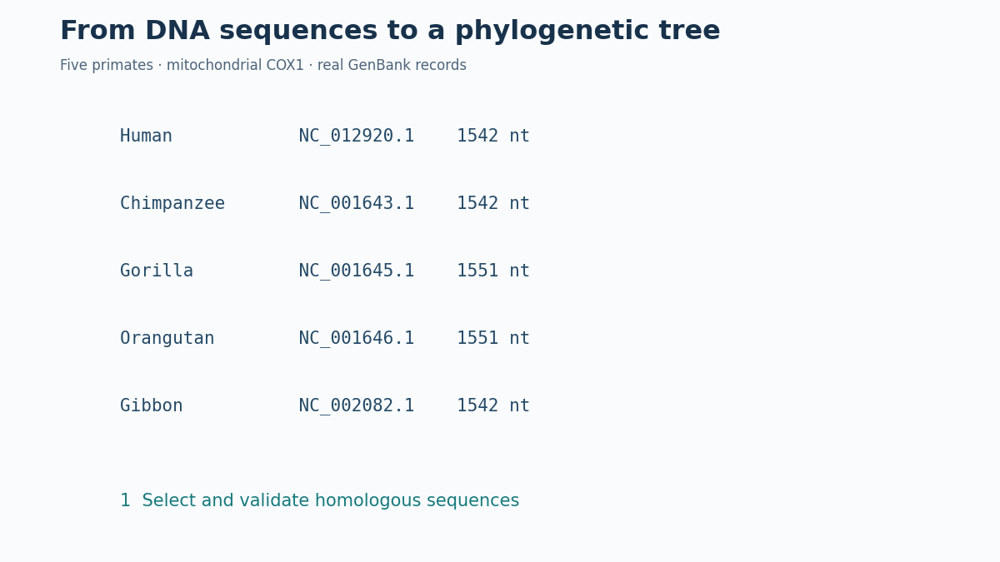
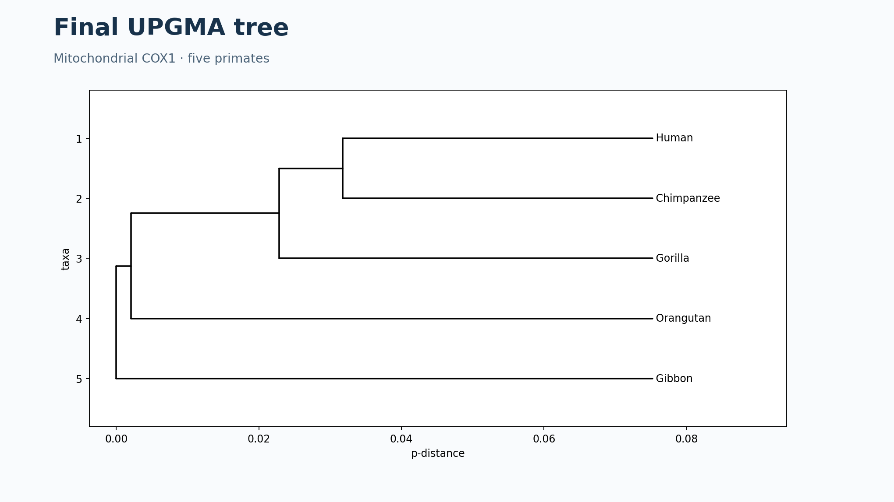

De las secuencias de ADN al árbol filogenético: cinco primates
Ejemplo ilustrativo calculado a partir de cinco registros GenBank. El árbol representa la inferencia obtenida con UPGMA sobre el gen mitocondrial COX1; este ejemplo no es una demostración definitiva de la filogenia de especies.

Objetivos
Comprender cómo se seleccionan secuencias homólogas, por qué se alinean, cómo se calcula una matriz de distancias genéticas y cómo UPGMA construye un árbol a partir de ella. Se muestran todos los resultados calculados y se proporcionan archivos para reproducirlos.
1. Selección de las secuencias reales
Elegimos el gen mitocondrial ortólogo COX1 (citocromo c oxidasa, subunidad I) en cinco primates. Se recuperó la región secuencia codificante (CDS, del inglés Coding Sequence) anotada de cada registro GenBank, no un intervalo arbitrario del genoma.
| Especie | Accesión NCBI | Coordenadas CDS (1-based, inclusivas) | Longitud |
|---|---|---|---|
| Humano (Homo sapiens) | NC_012920.1 | 5904–7445 | 1542 nt |
| Chimpancé (Pan troglodytes) | NC_001643.1 | 5321–6862 | 1542 nt |
| Gorila (Gorilla gorilla) | NC_001645.1 | 5325–6875 | 1551 nt |
| Orangután (Pongo pygmaeus) | NC_001646.1 | 5332–6882 | 1551 nt |
| Gibón (Hylobates lar) | NC_002082.1 | 5322–6863 | 1542 nt |
Reproducibilidad: Visualización en navegador los registros originales se conservan en
genbank/, las CDS extraídas en
secuencias-cox1.fasta
y los metadatos en
validacion-cox1.csv.
Reproducibilidad: Descargas en equipo los registros originales se conservan en
genbank/, las CDS extraídas en
secuencias-cox1.fasta
y los metadatos en
validacion-cox1.csv.
¿Qué es una CDS y en qué se diferencia del ARN mensajero maduro?
La CDS es la región que codifica una proteína. En un ARNm eucariota nuclear, la CDS no incluye las regiones no traducidas (UTR); los intrones se eliminan durante el procesamiento del ARN. En nuestro ejercicio, extraemos las CDS como ADN a partir de las anotaciones GenBank, no moléculas de ARN.
El gen mitocondrial COX1 presenta particularidades respecto a muchos genes nucleares, entre ellas el uso del código genético mitocondrial de vertebrados.
2. Validación de las secuencias
Seleccionamos previamente las cinco especies, el marcador COX1 y los registros GenBank. A continuación, el programa procesar_datos.py comprueba automáticamente la accesión y la especie de cada registro; localiza una única CDS anotada como COX1 (o denominación equivalente); extrae la secuencia respetando la orientación de su anotación; verifica que contiene únicamente A, C, G y T y que su longitud es múltiplo de tres; y comprueba que su traducción con el código mitocondrial de vertebrados (tabla 2) no presenta paradas internas.
Resultados: cinco CDS válidas para estas comprobaciones, ninguna base N, ninguna parada interna; todas las CDS están anotadas en la hebra positiva. Las diferencias de longitud (1542 frente a 1551 nt) evidencian la necesidad de establecer correspondencias entre posiciones mediante un alineamiento; incluso secuencias de igual longitud pueden requerirlo. Estas comprobaciones no sustituyen una revisión filogenética exhaustiva de ortología, calidad de ensamblaje y posible sesgo de secuencia.
¿Cómo interpretamos los resultados de validación?
Cinco CDS válidas: las cinco secuencias superaron las pruebas concretas del programa; no significa que hayan superado todas las evaluaciones biológicas posibles.
Ninguna base N: no aparecen nucleótidos desconocidos; esto no descarta por sí solo errores de secuenciación.
Sin paradas internas: la traducción no contiene señales de terminación inesperadas antes del final. Para COX1 se usa el código mitocondrial de vertebrados, en el que, por ejemplo, TGA codifica triptófano.
Hebra positiva: las anotaciones de las cinco CDS están orientadas en el sentido positivo de sus respectivas secuencias de referencia; no implica que esa hebra sea biológicamente superior.
Longitudes diferentes: tres secuencias miden 1542 nt y dos 1551 nt. La diferencia no demuestra por sí sola dónde ocurrió una inserción o deleción evolutiva.
Limitaciones: las pruebas no verifican exhaustivamente la ortología, la calidad del ensamblaje ni posibles sesgos de composición o evolución. La ortología es una hipótesis razonable para este marcador, pero no queda demostrada solo por estas comprobaciones.
¿Qué decisiones tomamos y qué operaciones realiza Python?
Decisiones metodológicas: elegir especies, gen, registros y estrategia de análisis. Operaciones automatizadas: leer GenBank, localizar la CDS, extraerla, comprobar caracteres y traducción, generar el alineamiento, calcular distancias y ejecutar UPGMA.
El archivo procesar_datos.py permite examinar la implementación. La extracción mediante f.extract(r.seq) respeta la orientación anotada; el código registra las coordenadas, pero no contiene una instrucción independiente que exija que la hebra sea positiva.
3. Alineamiento y cálculo de distancias
Realizamos un alineamiento global progresivo anclado a la secuencia humana: cada CDS se alineó globalmente frente a la humana y las inserciones respecto a esa referencia se incorporaron en columnas comunes. Se utilizó Bio.Align.PairwiseAligner con puntuaciones match=2, mismatch=-1, apertura de hueco -6 y extensión -0.5. Es un procedimiento reproducible y apropiado para estas secuencias próximas, pero no equivale a ejecutar MAFFT o Clustal Omega. Para un estudio de investigación convendría contrastarlo con un alineamiento codón-consciente.
¿Qué otras herramientas permiten realizar alineamientos múltiples?
MAFFT y Clustal Omega son programas especializados para alinear múltiples secuencias de ADN, ARN o proteínas. Utilizan estrategias de alineamiento que pueden diferir de nuestro procedimiento de alineamientos por parejas anclados a una referencia.
En este ejercicio no ejecutamos ninguno de ellos: usamos Bio.Align.PairwiseAligner desde Python. Sus árboles guía de alineamiento, cuando se emplean, no deben confundirse con el árbol filogenético inferido posteriormente.
Herramientas: MAFFT y Clustal Omega (EMBL-EBI).
El alineamiento resultante contiene 1560 columnas. Se comprobó que, al eliminar los huecos de cada secuencia alineada, se recupera exactamente la CDS original. Archivo: alineamiento-cox1.fasta.
Para cada pareja de especies se calculó la distancia p:
pij = Número de nucleótidos diferentes Número de posiciones comparables
Las posiciones con huecos o caracteres distintos de A/C/G/T se excluyeron por pareja. Por ello el denominador puede variar entre comparaciones. La distancia p mide diferencias observadas; no corrige sustituciones múltiples ni debe interpretarse automáticamente como tiempo evolutivo.
Matriz de distancias p (calculada)
| Especie | Humano | Chimpancé | Gorila | Orangután | Gibón |
|---|---|---|---|---|---|
| Humano | 0.00000 | 0.08690 | 0.10895 | 0.14462 | 0.14916 |
| Chimpancé | 0.08690 | 0.00000 | 0.10052 | 0.14332 | 0.15499 |
| Gorila | 0.10895 | 0.10052 | 0.00000 | 0.15110 | 0.14462 |
| Orangután | 0.14462 | 0.14332 | 0.15110 | 0.00000 | 0.15305 |
| Gibón | 0.14916 | 0.15499 | 0.14462 | 0.15305 | 0.00000 |
Ejemplo de cálculo con los datos reales: humano–chimpancé: 134 diferencias / 1542 posiciones comparables = 0.08690. Los diez recuentos se encuentran en diferencias.csv.
4. Construcción del árbol con UPGMA
UPGMA (Unweighted Pair Group Method with Arithmetic Mean) es un método de agrupamiento jerárquico que construye un árbol enraizado a partir de una matriz de distancias. En cada paso fusiona los grupos más cercanos. Para una explicación numérica con animación interactiva, consulta UPGMA y Neighbor-Joining.
¿Cómo funciona UPGMA y qué supone el reloj molecular?
Primero se identifica la menor distancia entre grupos y se fusiona esa pareja. Después se calculan las distancias del grupo nuevo al resto, ponderando por el número de secuencias. El proceso continúa hasta que solo queda un grupo.
La altura de cada nodo nuevo es la mitad de la distancia de fusión; las ramas se obtienen restando alturas. UPGMA produce un árbol ultramétrico, coherente con un modelo de reloj molecular estricto. Que el árbol resulte ultramétrico por construcción no prueba que los datos cumplan ese supuesto.
UPGMA une en cada iteración los dos grupos con menor distancia y actualiza las distancias al resto mediante la media ponderada por el número de secuencias:
d(A ∪ B, C) = |A| · d(A,C) + |B| · d(B,C) |A| + |B|
La altura del nuevo nodo es d(A,B)/2; cada longitud de rama se obtiene restando la altura del nodo hijo a la del padre.
| Iteración | Grupos unidos | Distancia | Altura del nodo | Grupo resultante |
|---|---|---|---|---|
| 1 | Humano + Chimpancé | 0.08690 | 0.04345 | G1 |
| 2 | Humano,Chimpancé + Gorila | 0.10473 | 0.05237 | G2 |
| 3 | Humano,Chimpancé,Gorila + Orangután | 0.14635 | 0.07317 | G3 |
| 4 | Humano,Chimpancé,Gorila,Orangután + Gibón | 0.15045 | 0.07523 | G4 |
Actualización real de la primera fusión: se unen humano y chimpancé; las nuevas distancias del grupo {humano, chimpancé} son:
- A Gorilla gorilla: 0.10473.
- A Pongo pygmaeus: 0.14397.
- A Hylobates lar: 0.15208.
Las matrices de cada iteración están almacenadas en resultados.json y el historial completo de fusiones en iteraciones-upgma.csv.

El árbol final se encuentra también en formato Newick. Se comprobó que todas sus hojas tienen la misma distancia a la raíz (característica de UPGMA).
¿Qué es el formato Newick y cómo se interpreta?
Newick representa un árbol mediante texto: los paréntesis delimitan agrupaciones, las comas separan ramas, los dos puntos introducen longitudes de rama y el punto y coma cierra el árbol.
Por ejemplo, ((Humano:1,Chimpance:1):2,Gorila:3); representa un árbol en el que humano y chimpancé comparten un nodo, y las cifras indican longitudes de rama, no necesariamente años.
El archivo arbol-upgma.nwk contiene la estructura y longitudes calculadas, que pueden visualizarse con herramientas compatibles, como Biopython o iTOL.
5. Interpretación y limitaciones
En este ejemplo, humano y chimpancé se agrupan primero; después se incorpora el gorila, luego el orangután y por último el gibón. Esta es la topología inferida a partir de estas secuencias y de este procedimiento. No implica que una especie actual sea ancestro de otra. Los nodos representan ancestros comunes inferidos y las ramas están medidas en unidades de distancia p, no en años.
UPGMA supone una tasa evolutiva aproximadamente constante (reloj molecular estricto). El árbol UPGMA es ultramétrico por construcción; esto no demuestra que los datos satisfagan el supuesto del reloj molecular. Además, un único gen mitocondrial describe una historia genética particular, no necesariamente toda la historia de las especies. Para inferencias robustas deben considerarse más genes, modelos de sustitución, métodos alternativos y soporte estadístico.
6. Para reflexionar
- ¿Por qué no se comparan genes distintos?
- ¿Por qué las CDS tienen diferentes longitudes?
- ¿Qué significa
p = 0,08690para humano y chimpancé? - ¿Por qué cambian las distancias al formar un grupo?
- ¿Qué supuesto introduce UPGMA y qué limitaciones tiene un árbol basado en un solo gen?
7. Reproducibilidad y materiales
Los archivos GenBank de entrada están en genbank/. Para reproducir los resultados se requiere Python 3 con biopython, matplotlib, numpy y pillow. Ejecutar desde la carpeta del proyecto python procesar_datos.py y luego python generar_animacion.py. No es necesario ejecutar nada para visualizar el Markdown, la figura y el GIF publicados en GitHub Pages.
Trazabilidad: validacion-cox1.csv · secuencias-cox1.fasta · alineamiento-cox1.fasta · diferencias.csv · distancias.csv · iteraciones-upgma.csv · resultados.json · arbol-upgma.nwk.
Actividad guiada: construye tu primer árbol filogenético
Referencias: NCBI Nucleotide, Biopython, MAFFT, GitHub Pages.